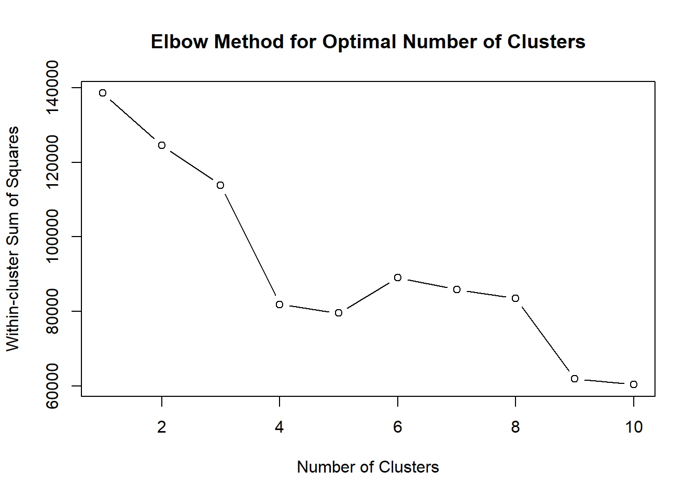
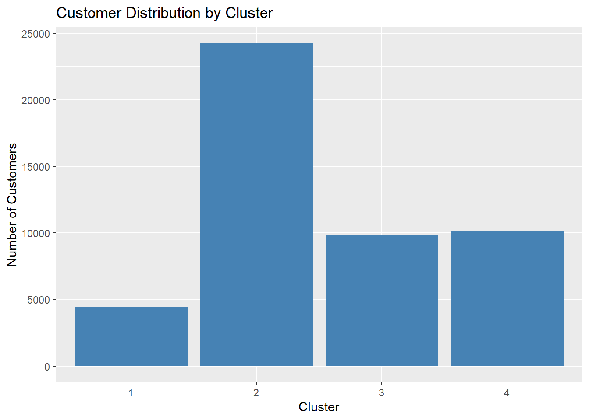
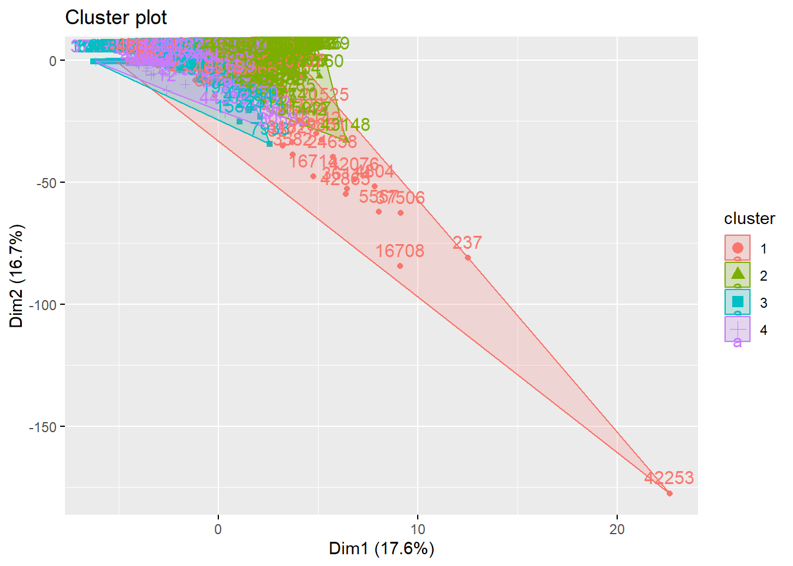

pacman::p_load(ggrepel, patchwork,
ggthemes, hrbrthemes,
tidyverse, cluster,
factoextra)Installing package into 'C:/Users/kchan/AppData/Local/R/win-library/4.5'
(as 'lib' is unspecified)The objective of this project is to understand the behaviors behind customer transactions and how socio-demographic factors—such as age, income, and occupation—affect customer transactions. By applying statistical correlation techniques, we aim to identify which personal attributes are the true drivers of financial activity within the Colombian fintech ecosystem.
The required R packages are loaded using the pacman::p_load() function, which automatically installs the packages if they are not already available and loads them into the working environment. These libraries support data manipulation, visualization, and clustering analysis required for the visual analytics application.
pacman::p_load(ggrepel, patchwork,
ggthemes, hrbrthemes,
tidyverse, cluster,
factoextra)Installing package into 'C:/Users/kchan/AppData/Local/R/win-library/4.5'
(as 'lib' is unspecified)The COFINFAD dataset consists of two CSV files: customer_data.csv, which contains demographic, behavioral, and engagement information for 48,723 customers, and transactions_data.csv, which records over 3.1 million individual financial transactions. These datasets are loaded into R to enable further preprocessing, exploratory analysis, and customer segmentation through clustering techniques.
# Import datasets
# Import datasets
customer_data <- read_csv("data/customer_data.csv")Rows: 48723 Columns: 54
── Column specification ────────────────────────────────────────────────────────
Delimiter: ","
chr (13): gender, location, income_bracket, occupation, education_level, ma...
dbl (29): customer_id, age, household_size, active_products, app_logins_fre...
lgl (7): savings_account, credit_card, personal_loan, investment_account, ...
date (5): first_tx, last_tx, last_survey_date, last_transaction_date, first...
ℹ Use `spec()` to retrieve the full column specification for this data.
ℹ Specify the column types or set `show_col_types = FALSE` to quiet this message.transactions_data <- read_csv("data/transactions_data.csv")Rows: 3159157 Columns: 4
── Column specification ────────────────────────────────────────────────────────
Delimiter: ","
chr (1): type
dbl (2): customer_id, amount
date (1): date
ℹ Use `spec()` to retrieve the full column specification for this data.
ℹ Specify the column types or set `show_col_types = FALSE` to quiet this message.# Preview datasets
head(customer_data)# A tibble: 6 × 54
customer_id age gender location income_bracket occupation education_level
<dbl> <dbl> <chr> <chr> <chr> <chr> <chr>
1 93716481 44 Male Pereira, R… Very High Engineer Master
2 49020929 44 Male Cali, Vall… Medium Construct… Bachelor
3 52690950 45 Male Barranquil… High Construct… Bachelor
4 23199751 45 Male Bogotá, Cu… High Electrici… High School
5 61997066 44 Female Bogotá, Cu… Medium Cleaner Bachelor
6 85721098 45 Female Bogotá, Cu… Medium Architect PhD
# ℹ 47 more variables: marital_status <chr>, household_size <dbl>,
# acquisition_channel <chr>, customer_segment <chr>, savings_account <lgl>,
# credit_card <lgl>, personal_loan <lgl>, investment_account <lgl>,
# insurance_product <lgl>, active_products <dbl>, app_logins_frequency <dbl>,
# feature_usage_diversity <dbl>, bill_payment_user <lgl>,
# auto_savings_enabled <lgl>, credit_utilization_ratio <dbl>,
# international_transactions <dbl>, failed_transactions <dbl>, …head(transactions_data)# A tibble: 6 × 4
customer_id date amount type
<dbl> <date> <dbl> <chr>
1 93716481 2023-11-23 1262800 Transfer
2 93716481 2023-01-05 928900 Withdrawal
3 93716481 2023-11-05 1683100 Payment
4 93716481 2023-04-14 4507350 Payment
5 93716481 2023-08-04 2096150 Payment
6 93716481 2023-03-29 2124050 Payment colnames(customer_data) [1] "customer_id" "age"
[3] "gender" "location"
[5] "income_bracket" "occupation"
[7] "education_level" "marital_status"
[9] "household_size" "acquisition_channel"
[11] "customer_segment" "savings_account"
[13] "credit_card" "personal_loan"
[15] "investment_account" "insurance_product"
[17] "active_products" "app_logins_frequency"
[19] "feature_usage_diversity" "bill_payment_user"
[21] "auto_savings_enabled" "credit_utilization_ratio"
[23] "international_transactions" "failed_transactions"
[25] "tx_count" "avg_tx_value"
[27] "total_tx_volume" "first_tx"
[29] "last_tx" "base_satisfaction"
[31] "tx_satisfaction" "product_satisfaction"
[33] "satisfaction_score" "nps_score"
[35] "last_survey_date" "support_tickets_count"
[37] "resolved_tickets_ratio" "app_store_rating"
[39] "feedback_sentiment" "feature_requests"
[41] "complaint_topics" "clv_segment"
[43] "monthly_transaction_count" "average_transaction_value"
[45] "total_transaction_volume" "transaction_frequency"
[47] "last_transaction_date" "preferred_transaction_type"
[49] "first_transaction_date" "weekend_transaction_ratio"
[51] "avg_daily_transactions" "customer_tenure"
[53] "churn_probability" "customer_lifetime_value" colnames(transactions_data)[1] "customer_id" "date" "amount" "type" To perform customer segmentation, a subset of relevant behavioral, engagement, and financial variables was selected from the customer dataset. These variables capture different dimensions of customer activity within the fintech platform and help identify meaningful customer segments.
cluster_data <- customer_data %>%
select(
age,
active_products,
app_logins_frequency,
feature_usage_diversity,
tx_count,
avg_tx_value,
monthly_transaction_count,
transaction_frequency,
satisfaction_score,
nps_score,
churn_probability,
customer_lifetime_value
)Before performing clustering, missing values were handled to ensure data quality and prevent errors during analysis. Observations containing missing values were removed to create a clean dataset for clustering.
cluster_data <- na.omit(cluster_data)Since the selected variables are measured on different scales (e.g., transaction volume, satisfaction scores, and login frequency), the data was standardized. Standardization ensures that all variables contribute equally to the clustering process.
cluster_scaled <- scale(cluster_data)Because the dataset is relatively large, a random sample was used to determine the optimal number of clusters using the Elbow Method. This reduces memory usage while still providing a reliable estimate of the appropriate cluster count.
set.seed(123)
# take a sample for elbow method
cluster_sample <- as.data.frame(cluster_scaled) %>%
slice_sample(n = 10000)
# compute WSS manually
wss <- numeric(10)
for (i in 1:10) {
km <- kmeans(cluster_sample, centers = i, nstart = 10)
wss[i] <- km$tot.withinss
}
# plot elbow curve
plot(1:10, wss, type = "b",
xlab = "Number of Clusters",
ylab = "Within-cluster Sum of Squares",
main = "Elbow Method for Optimal Number of Clusters")
set.seed(123)
kmeans_model <- kmeans(cluster_scaled, centers = 4, nstart = 25)Assign Cluster Labels to Dataset
After performing K-Means clustering, the cluster labels generated by the algorithm were appended to the dataset. This allows each customer to be associated with a specific cluster for further analysis and visualization.
customer_data$cluster <- kmeans_model$clusterThe distribution of customers across clusters was examined to understand how the dataset was segmented. This helps identify whether the clusters are balanced or dominated by a particular group.
Code
table(customer_data$cluster)
1 2 3 4
4450 24263 9824 10186 ggplot(customer_data, aes(x = factor(cluster))) +
geom_bar(fill = "steelblue") +
labs(
title = "Customer Distribution by Cluster",
x = "Cluster",
y = "Number of Customers"
)
To better understand the separation between clusters, the clustering results were visualized using dimensionality reduction techniques. This visualization provides an overview of how customers are grouped based on their behavioral and financial characteristics.
fviz_cluster(kmeans_model, data = cluster_scaled)
Analyze Cluster Characteristics
To interpret the meaning of each cluster, the average values of key variables were calculated for each cluster. This allows us to identify behavioral patterns and characteristics that distinguish different customer segments.
cluster_summary <- customer_data %>%
group_by(cluster) %>%
summarise(
avg_age = mean(age, na.rm = TRUE),
avg_products = mean(active_products),
avg_logins = mean(app_logins_frequency),
avg_transactions = mean(tx_count),
avg_tx_value = mean(avg_tx_value),
avg_satisfaction = mean(satisfaction_score),
avg_nps = mean(nps_score),
avg_churn = mean(churn_probability),
avg_clv = mean(customer_lifetime_value)
)
cluster_summary# A tibble: 4 × 10
cluster avg_age avg_products avg_logins avg_transactions avg_tx_value
<int> <dbl> <dbl> <dbl> <dbl> <dbl>
1 1 44.2 1.96 22.5 245. 13476030.
2 2 44.8 1.51 22.0 37.8 2475327.
3 3 45.9 1.75 21.9 64.7 2652231.
4 4 42.8 3.87 23.7 50.7 2710343.
# ℹ 4 more variables: avg_satisfaction <dbl>, avg_nps <dbl>, avg_churn <dbl>,
# avg_clv <dbl>To better compare the characteristics of different clusters, key behavioral and financial variables were visualized across clusters. This helps highlight the differences between customer segments.
ggplot(customer_data, aes(x = factor(cluster), y = tx_count)) +
geom_boxplot(fill = "orange") +
labs(
title = "Transaction Count by Cluster",
x = "Cluster",
y = "Transaction Count"
)
The clustering results reveal distinct customer segments within the fintech platform. For instance, some clusters represent highly active customers with frequent transactions and high customer lifetime value, while others represent lower engagement users with fewer financial activities and higher churn probability.